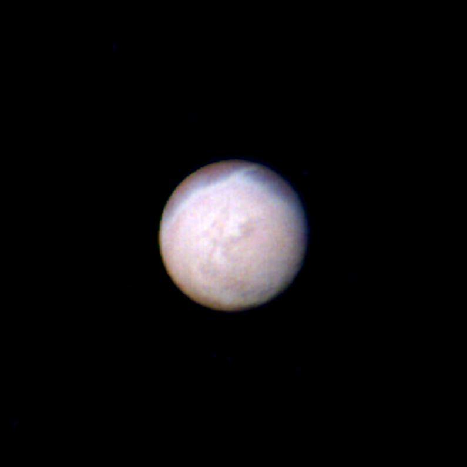

Tritone
| Dati Principali | |
|---|---|
| Pianeta madre | Nettuno |
| Diametro | 2.710 km |
| Massa | 2,14 × 10²² kg |
| Distanza da Nettuno | 354.800 km |
| Periodo orbitale | 5,88 giorni (retrogrado) |
| Superficie | Ghiacciata, con geyser di azoto e pochi crateri |
| Atmosfera | Sottile, composta principalmente da azoto |


Struttura di Tritone
Tritone possiede un nucleo roccioso, un mantello ghiacciato e una superficie attiva con geyser. È uno dei pochi corpi del Sistema Solare con attività criovulcanica.
Il suo moto orbitale retrogrado suggerisce che sia stato catturato da Nettuno e non si sia formato in loco.
Curiosità su Tritone
- 🌀 Orbita attorno a Nettuno in direzione opposta alla rotazione del pianeta.
- ❄️ Presenta geyser attivi che emettono azoto liquido nel vuoto spaziale.
- 🌌 È uno